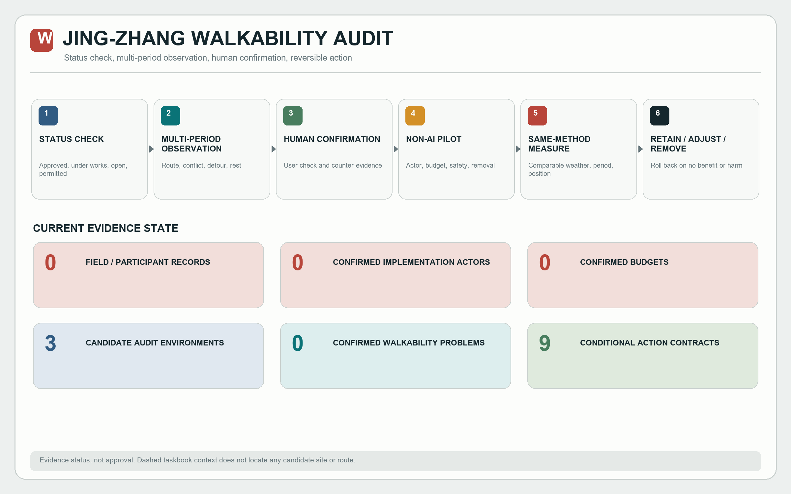
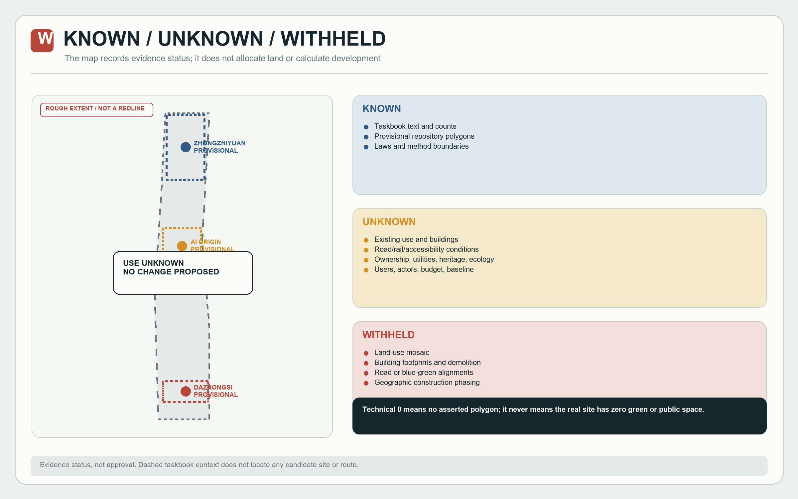
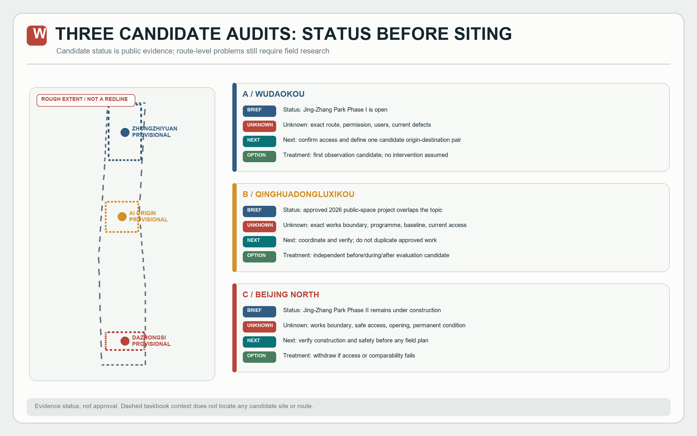
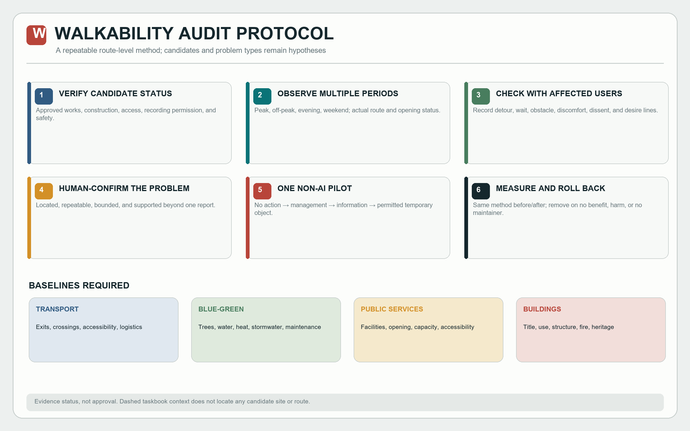
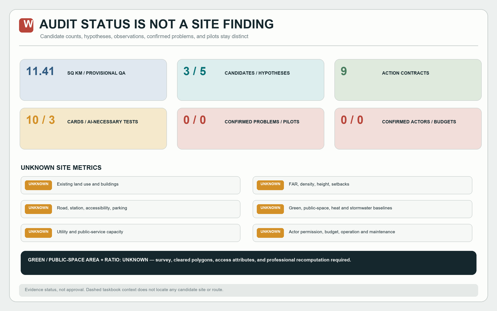

JING-ZHANG WALKABILITY AUDIT
This static page distinguishes candidate status, hypotheses, observations, confirmed problems, and reversible actions. It does not present a diagnosed defect or approved project.
Overview mapThree-level scopeKey areasLand-use allocationTransport and walkingBlue-green public spaceBuildingsRenewal actionsAI scenariosCore metricsTask coverageSelf-check statusSourcesAssumptions
Core metrics and self-check status
Green/public-space areas and actual ratios are unknown. The hidden numeric declarations are retained only because the current visual validator requires them; exclude them from planning and cross-submission statistics.
Status-to-action sequence

Known, unknown, and withheld

Three candidate audit environments

Walkability-audit protocol

Audit metrics and gaps

Sources, assumptions, and task coverage
The announcement and taskbook define the task. Repository polygons are provisional. Site conditions, actors, budgets, and baselines remain unknown until verified.